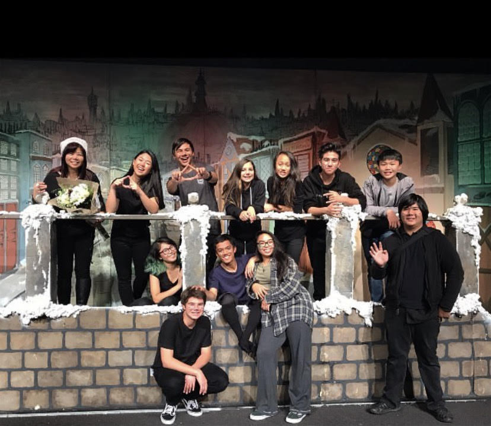
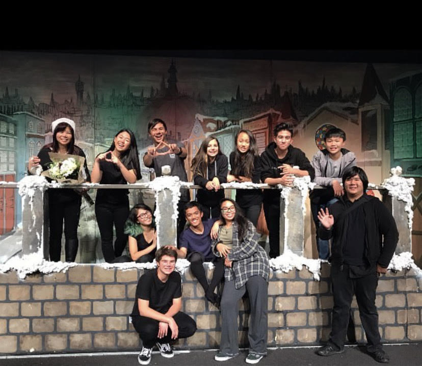
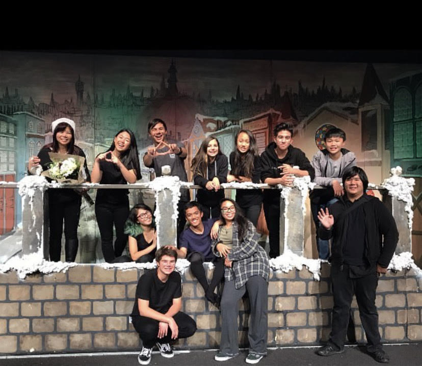

Jax Canonizado-Aquino
I am a current student at University of California, Riverside. I am a psychology major and am one quarter away from achieving my B.A. While I am aiming towards a psychology profession, I also have experiences in several other fields. For one, I am trained in many Microsoft programs such as Excel and Word as well as created a few very simple websites. I also have worked for a local broadcasting station in editing live television and have participated in many charity events in my home town of San Francisco. I also have a background in music as I have performed in many orchestras, musicals, and even once created my own band, all of which I performed as the bass player.
As far as job history goes, I have worked both in retail and in a commercial kitchen. I once worked under my father for his clothing brand known as "BLVCK SCVLE" (To be read as "Black Scale"). I worked here for only one summer but I still learned a lot from the experience. Since I only worked here for one summer, I had to quickly learn how to pull my own weight with little to no guidance as well as contribute a noticable amount of effort in a stressful and heavy work environment. Additionally, I worked part-time in a restaurant named "Poke Island". The restaurant was partnered with another company known as "Oh My Wheelcake" which specialized in sweet Taiwanese custard filled pastries. For a year I worked as both a host for the main restaurant itself and a pastry chef, preparing batter and custard to be cooked and sold to customers. Often, the restaurant owners would leave me responsible for the establishment to up to several days in a row. This taught me the importance of responsibility and to be self-reliant as it was on me to essentially operate an entire restaurant on an almost daily basis.
Additionally, I work for myself as a part-time streamer on Twitch. Most often, I stream myself playing video-games where I implement self-imposed challenges as a means of critical thinking. Through this platform I also collaborate with other streamers in events for viewers to enjoy. I have been active on Twitch for nearly two years now (as of October, 2023) and have learned many skills in teamwork and collaborating. This platform also leaves me to evaluate what viewers desire in terms of my content in which I often recognize and abide by.
Experience
Floor Runner
• Responsible for checking out customers
• Provided customer service
• Responsible for maintaining quality in clothes and for the store
• Helped prepare online orders
• Occasionally ran mailing orders
Host/Pastry Chef
• Responsible for taking customer's orders
• Prepared batter and custard
• Often was responsible for maintaining store as a whole
• Provided customer service
Education
UC Riverside
College of San Mateo
Citrus College
Portfolio
 



